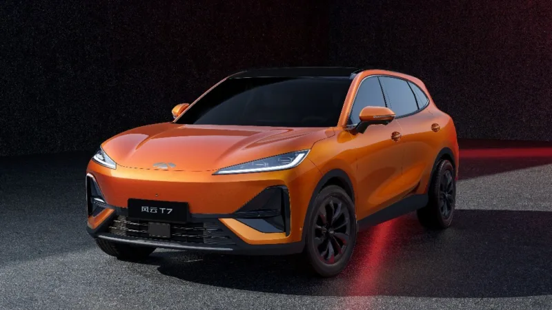
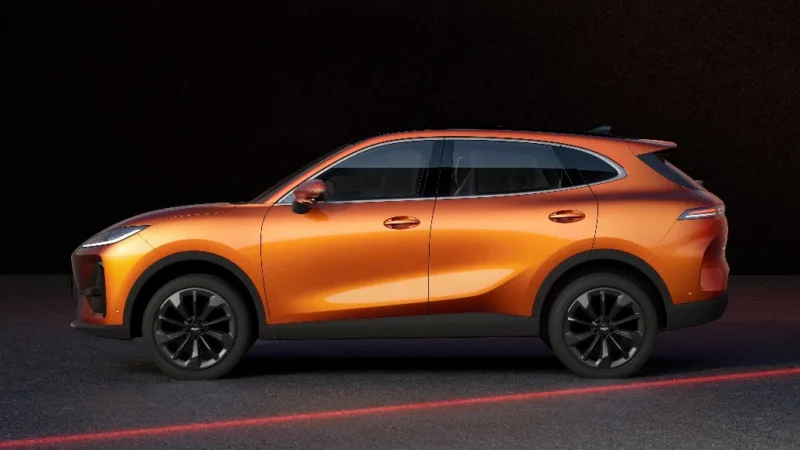
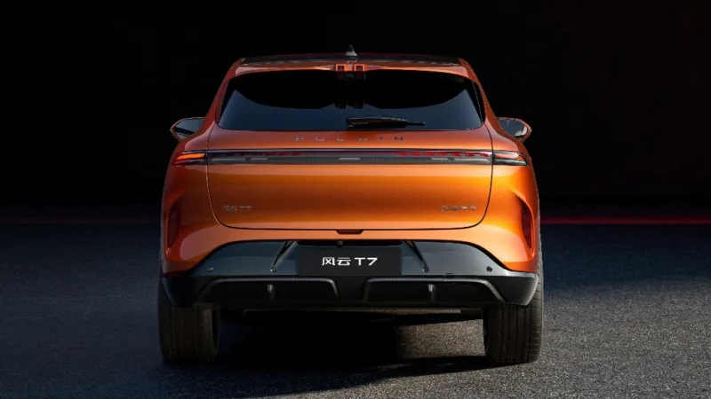
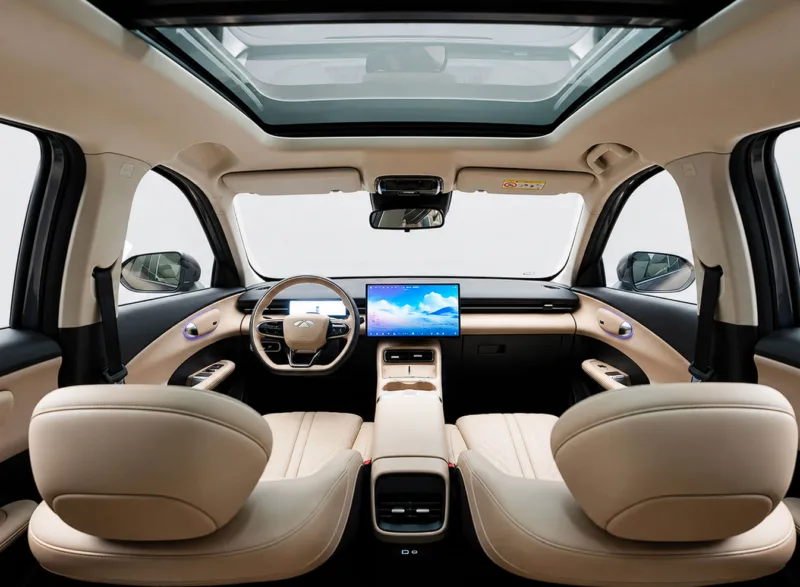

▲ 체리자동차가 2026년 8월 26일 청두모터쇼에서 정식 출시한 풀윈 T7. 차체 배지에 '펑윈(风云) T7'이 선명하다 ⓒ carnewschina.com
중국 체리자동차가 2026년 8월 26일 청두모터쇼에서 순수전기 콤팩트 SUV '풀윈(风云) T7'을 정식 출시했다. 시작 가격이 9만 7,900위안, 원화로 환산하면 약 2,005만 원 수준이다. 국산 준중형 전기 SUV 가격의 절반에도 못 미치는 숫자에 CLTC 기준 600km 주행거리까지 더해지며 화제를 모았다. 출시 24시간 만에 2만 3,188건의 사전계약이 몰렸다는 소식도 함께 전해졌다.
1. 가격 — 2,005만 원의 진짜 의미
가장 화제가 된 숫자는 시작가 9만 7,900위안이다. 기사 작성 시점 환율을 적용하면 원화로 약 2,005만 원, 최상위 트림(11만 8,900위안)은 약 2,434만 원 수준으로 환산된다. 다만 이는 어디까지나 중국 현지 판매가를 단순 환산한 수치일 뿐, 국내에 들여올 경우 관세·부가가치세·인증 비용·유통 마진이 더해지므로 실제 국내 판매가가 그대로 이 가격이 되지는 않는다.
| 구분 | 체리 풀윈 T7 |
|---|---|
| 전장 × 전폭 × 전고 | 4,570 × 1,852 × 1,694mm |
| 휠베이스 | 2,700mm |
| 배터리 | 65.05kWh LFP |
| 주행거리(CLTC) | 최대 600km |
| 모터 출력 | 178kW(239마력), 전륜구동 |
| 중국 판매가 | 9만 7,900~11만 8,900위안 |
2. 주행거리 — 600km는 CLTC 기준

▲ 풀윈 T7 측면. 전장 4,570mm에 휠베이스 2,700mm로 준중형 전기 SUV 체급이다 ⓒ carnewschina.com
주행거리 600km 역시 중국 CLTC 인증 기준값이다. CLTC는 국내 환경부 인증이나 유럽 WLTP보다 시험 조건이 관대해 실주행 환산 시 거리가 줄어드는 경향이 있다. 배터리는 65.05kWh급 리튬인산철(LFP) 방식으로, 니켈·코발트계 배터리보다 원가가 낮은 대신 에너지 밀도는 다소 떨어지는 것이 일반적이다. 저렴한 가격의 배경에는 이 배터리 선택도 한몫한 것으로 풀이된다.
3. 디자인 — 체리의 새 패밀리룩

▲ 풀윈 T7 후면. 가로로 이어진 얇은 테일램프와 하단 디퓨저 형상의 범퍼가 특징이다 ⓒ carnewschina.com
외관은 막힌 형태의 프런트 그릴과 얇은 '윈드 블레이드' 헤드램프, X자 형태의 하단 범퍼, 대형 에어가이드 슬롯 등으로 구성됐다. 체리는 이 차를 해외 시장에서 이미 판매 중인 '레파스(Lepas) L6'의 중국 내수 버전으로 소개하고 있으며, 태국·남아프리카공화국 등에서는 레파스 브랜드로 먼저 출시된 바 있다.
4. 실내 — 15.6인치 화면에 주행보조 기능까지

▲ 풀윈 T7 실내. 15.6인치 센터 디스플레이와 대형 파노라마 선루프가 눈에 띈다 ⓒ carnewschina.com
실내에는 15.6인치 2.5K 해상도의 센터 디스플레이와 체리의 '링시 스마트 캐빈 2.0' 인터페이스가 탑재됐다. 상위 트림에는 최대 22개 센서를 활용하는 주행보조 시스템 '팰컨 500'이 들어가, 자동 주차·원격 주차·후진 추적·고속도로 내비게이션 기반 주행보조(NOA) 등의 기능을 지원한다. 이 가격대 전기 SUV로서는 상당히 적극적인 사양 구성이다.
5. 국내 출시는? — 브랜드 자체가 아직 없다
체크포인트
- 체리자동차는 국내에 브랜드 런칭을 준비 중이라는 소식만 있을 뿐, 정식 진출 일정이 확정되지 않았다.
- 풀윈 T7이 국내에 들어오더라도 배터리 인증, 안전 규정, A/S망 구축 등을 거쳐야 하므로 상당한 시간이 걸릴 수 있다.
- 2,005만 원이라는 숫자는 어디까지나 중국 판매가의 환산치이며, 국내 실제 판매가와는 다를 수 있다는 점을 다시 한번 짚어둔다.
체리는 이미 티고 라인업 등으로 해외 시장 확장에 속도를 내고 있고, 국내에서도 브랜드 진출 준비 소식이 꾸준히 들려온다. 풀윈 T7과 같은 저가 전기 SUV가 실제로 국내에 들어올지, 들어온다면 어떤 가격표를 달게 될지는 체리의 공식 발표를 기다려야 확인할 수 있다.